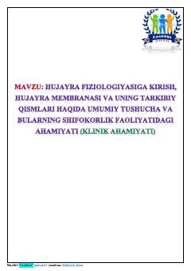

HFHujayra membranasi tuzilishi va uning fiziologik xususiyatlari haqida o'quv qo'llanma.
Ushbu qo'llanma hujayra fiziologiyasi va hujayra membranasi tuzilishi hamda uning ahamiyatiga bag'ishlangan. Unda kimyoviy bog'lanishlar, elektromanfiylik va membrananing gidrofil hamda lipofil xususiyatlari ilmiy nuqtai nazardan tushuntirilgan.